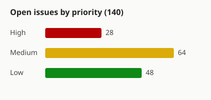

#1706 · queued thread messages can silently vanish
Summary
bb thread tell --mode queue reports success, but the message is neither delivered nor left in the target's queue. Steer mode is unaffected. Agent fleets that coordinate through queue mode deadlock silently.
Images (test)


Reproduction (from the issue)
| Step | Observed |
|---|---|
| Send ~600-char queue-mode message to an idle thread | CLI: Thread thr_5q7mvrmsyi updated |
bb thread log on target | Message absent |
bb thread queue list on target | Empty |
| Two other queue-mode messages, same hour | Delivered |
Where to look
apps/server/src/services/threads/ # queuedMessages.create + drain on turn boundary packages/server-contract/ # queue-mode accept semantics
Hypothesis: the queue drain runs on the idle→busy transition and drops entries when the target is already idle at accept time. Needs a repro that pins the target state at send.